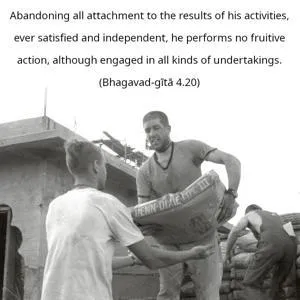

Abandoning all attachment to the results of his activities, ever satisfied and independent, he performs no fruitive action, although engaged in all kinds of undertakings.

This freedom from the bondage of actions is possible only in Kṛṣṇa consciousness, when one is doing everything for Kṛṣṇa. A Kṛṣṇa conscious person acts out of pure love for the Supreme Personality of Godhead, and therefore he has no attraction for the results of the action. He is not even attached to his personal maintenance, for everything is left to Kṛṣṇa. Nor is he anxious to secure things, nor to protect things already in his possession. He does his duty to the best of his ability and leaves everything to Kṛṣṇa. Such an unattached person is always free from the resultant reactions of good and bad; it is as though he were not doing anything. This is the sign of akarma, or actions without fruitive reactions. Any other action, therefore, devoid of Kṛṣṇa consciousness, is binding upon the worker, and that is the real aspect of vikarma, as explained hereinbefore.